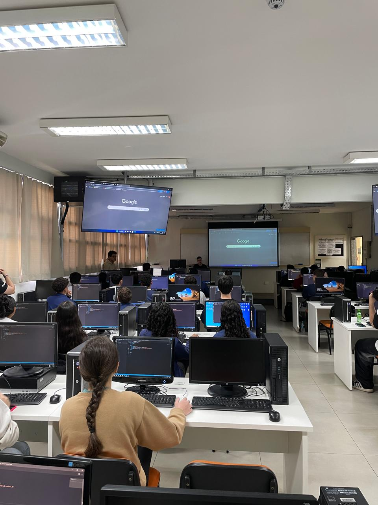

Relatório – 16ª Aula
Data: 08/09/2026
Turma: A
Instrutor: Victor
Landing Pages
Nesta aula de Pensamento Computacional, o instrutor Victor deu início a um novo conteúdo escolhido pelos próprios alunos, que optaram pelo desenvolvimento de Landing Pages em vez de iniciar JavaScript. A atividade teve como proposta a reprodução da landing page da Apple Brasil, utilizando as tecnologias que eles já tinham familiaridade, como HTML e CSS.
Durante o desenvolvimento, foram trabalhados elementos como imagens, ícones, links, textos, posicionamento e organização visual, além da aplicação de conceitos já estudados, como classes, IDs e containers. aula foi bastante produtiva, pois os alunos puderam aplicar conhecimentos adquiridos anteriormente em um projeto mais próximo de uma página profissional.
